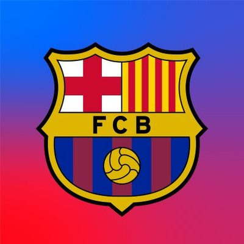
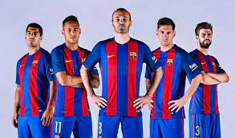

Historia
El Fútbol Club Barcelona, conocido popularmente como Barça es una entidad polideportiva con sede en
Barcelona,
España. Fue fundado como club de fútbol el 29 de noviembre de 1899 y registrado oficialmente el 5 de enero
de 1903.
Tanto el club como sus hinchas reciben el apelativo de «culers» (pronunciado culés),
y también, en referencia a sus colores, «azulgranas» o «blaugranas», tal como aparece en su himno,
el «cant del Barça», el cual en su segunda línea menciona «som la gent blaugrana» (en castellano, «somos la
gente azulgrana»).

Indumentaria
Los colores distintivos del F. C. Barcelona son el azul y el grana, de donde procede el sobrenombre
de «azulgrana» («blaugrana» en catalán) con el que se conoce a los jugadores y aficionados del club.

Estadio
El estadio del F. C. Barcelona es el Camp Nou, propiedad del propio club.
Inaugurado en 1957, tiene una capacidad de 99.354 espectadores,todos sentados. Es uno de los cuatro estadios
de España catalogado como «Estadio Cinco Estrellas» por la UEFA, lo que lo habilita para acoger finales de
la Liga de Campeones,
Supercopa de Europa y Copa de la UEFA, como ha sucedido en 15 ocasiones. Se encuentra en el barrio de Las
Corts de Barcelona, junto a otras instalaciones del club, como el Mini Estadi (estadio del Barcelona B) y el
Palau Blaugrana, cancha del equipo de baloncesto.
En las instalaciones del Camp Nou se encuentra el Museo del F. C. Barcelona, el museo más visitado de
Cataluña.

Palmarés
Ha ganado 26 Ligas de España, 31 Copa del Rey, 13 Supercopa de España. En el plano internacional ha
conseguido 17 copas repartidas en 5 Liga de Campeones de la UEFA, 4 Recopa de Europa de la UEFA, 5 Supercopa
de Europa y 3 Copa Mundial de Clubes de la FIFA, todos estos títulos organizados y auspiciados bajo
instituciones deportivas
oficiales como la Unión de Asociaciones Europeas de Fútbol (UEFA) y la Federación Internacional de Fútbol
Asociación (FIFA).
Otro de sus logros y reconocimientos a nivel futbolístico fue haber sido declarado el mejor club de España
en las dos primeras décadas del siglo XXI por el
Centro de Investigaciones de Historia y Estadística del Fútbol Español (CIHEFE),un organismo privado español
dedicado al estudio de la historia del fútbol, además de ser
el mejor club del siglo XXI por la IFFHS. Fue galardonado con el premio al "mejor equipo del mundo" por
parte de la revista británica
World Soccer en 3 oportunidades: 2006, 2009 y 2011. Ganador de dos premios Laureus World Sports en 2007 y
2011, un Premio Fair Play
de la FIFA en 2007, y una Placa de Oro de la Real Orden del Mérito Deportivo otorgado por el Consejo
Superior de Deportes en 1993,
entre muchos otros premios, le convierten en una de las entidades más populares, reconocidas y laureadas del
mundo.
Un hito histórico fue la hazaña de ganar 6 competiciones futbolistas de forma consecutiva y en un solo año
natural: Liga de España,
Copa del Rey, Supercopa de España, Liga de Campeones de la UEFA, Supercopa de Europa y la Copa Mundial
de Clubes de la FIFA, todas conquistadas en 2009. Este logro supuso un récord en la historia por ser el
primer club del mundo en conquistar
todas las competiciones posibles y lograr el denominado «sextete», por haber ganado los seis títulos
oficiales en un mismo año.
Por este logro, La FIFA redactó un artículo en su página web oficial titulado «El rey de las seis copas» y
calificó la temporada
de 2009 «un récord a todas luces sin precedentes